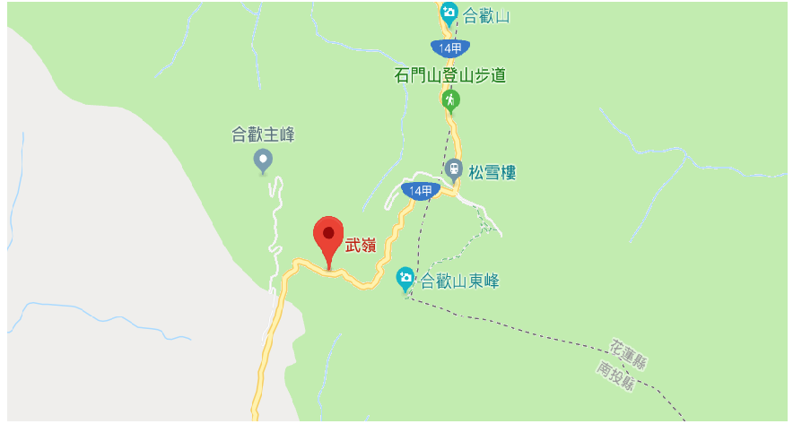

部落旅遊
中文
|
English
|
日本語
|
한국어
登入
註冊
幫助中心
會員功能
旅遊資訊
交通資訊
旅遊攻略
景點介紹
旅遊攻略
仁愛鄉2条路线
1
仁愛鄉2日经典玩法
46%
初次訪問仁愛鄉的Tribers會選擇這條路線
D1
清境農場
->
清境小瑞士花園
D1
合歡山
->
奧萬大國家森林遊樂園
查看>
2
仁愛鄉1日快速玩法

48%
初次訪問仁愛鄉的Tribers會選擇這條路線
D1
清境農場
->
武嶺
查看>